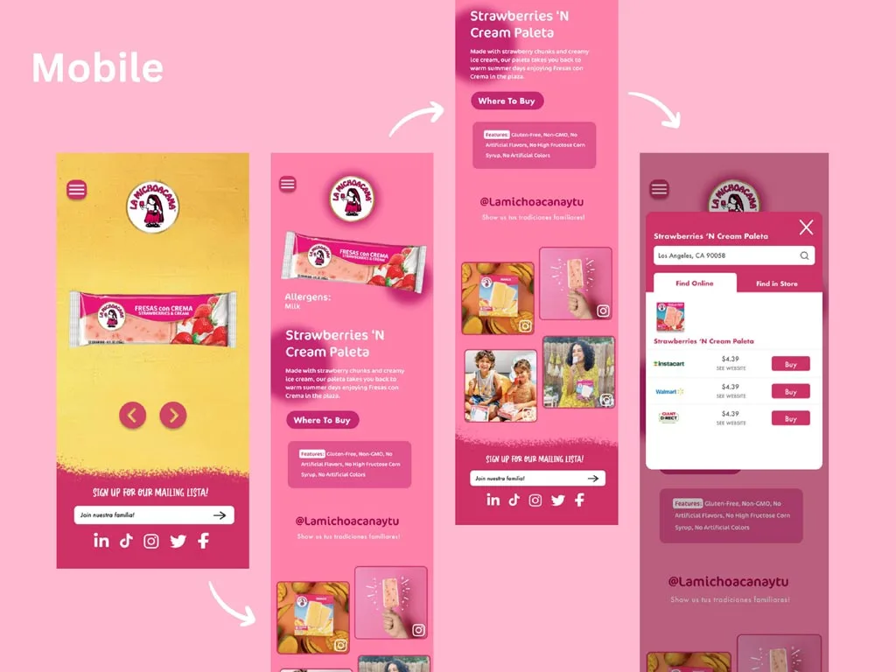
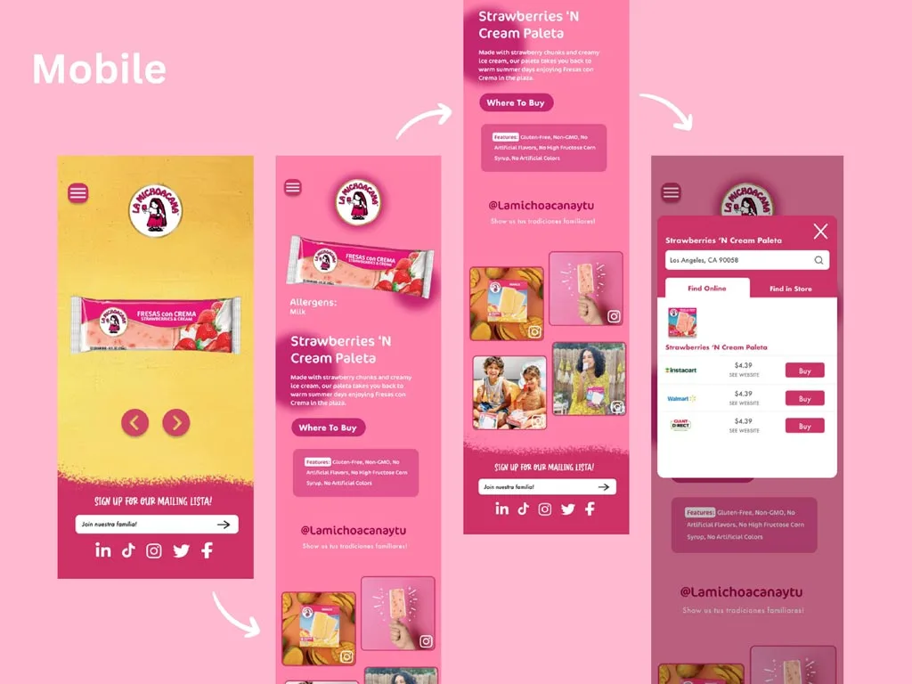

La Michoacana Website Redesign
I redesigned La Michoacana company's cluttered and outdated interface through a revamped Home page, Product page, and various Product description pages, ultimately enhancing brand identity and fueling interest in the company's products to drive increased sales.
Intro
As the final project for my UI Design class, I redesigned the website of La Michoacana, a Mexican-inspired ice cream retailer across desktop, tablet, and mobile interfaces. The original website can be found here: Michoacana.com.
Since the company's goal is to promote the popular Mexican tradition of eating paletas (popsicles), its existing customer base is Latinos and Hispanics. I identified the target user as a Hispanic mom living in the U.S., who wants to remain connected to her culture.


Critique
Although the website has vibrant colors that help to convey its brand identity, by the bottom half of the homepage there are too many colors to look at and the brand image gets lost in the colors of the different background images.
Not enough emphasis is placed on where to buy products, as the company chooses to promote blog posts first on the homepage.
After organizing a card sort, I changed the information architecture of the website to focus more on the company's products.
Process
Through Figma, I redesigned new and existing pages of the website and enhanced the website's branding overall across three interfaces.
For example, I determined the two colors hot pink and bright yellow best represent La Michoacana's brand and strategically altered the typography of the website to better reflect the playful design of the previous website.

My user journey consists of learning about the company through an Our Story page, navigating to the Products page, exploring the Product Description page to learn about the paletas sold by this company, and finding out about how to purchase them.


In my redesign, I streamlined the Product page and modernized the Paleta product pages to encourage interest in the userin learning more about La Michoacana's products.
Below is this product discovery user flow illustrated in all three devices.
- I also encourage you to visit my prototypes to discover my animations which enhanced this flow.
 

Reflection
This project pushed me to explore designing on multiple sizes, and how best to utilize the space given. Overall, I am proud of how I reflected the company's branding through strategic typography and creative graphical designs to define the look of the website. I learned more about Figma animations, and how to utilize them to intrigue the user.
If I could go back on my work, I would conduct another card sort to evaluate the IA further. I realized it's never wrong to engage in user testing multiple times since it produces designs better informed by their target user.
I have much more to learn about how UX intermingles with UI design and I am excited about future opportunities in this field.
To further understand the interface I have redesigned and the user journey I have illustrated, I urge you to explore my prototypes on Figma.